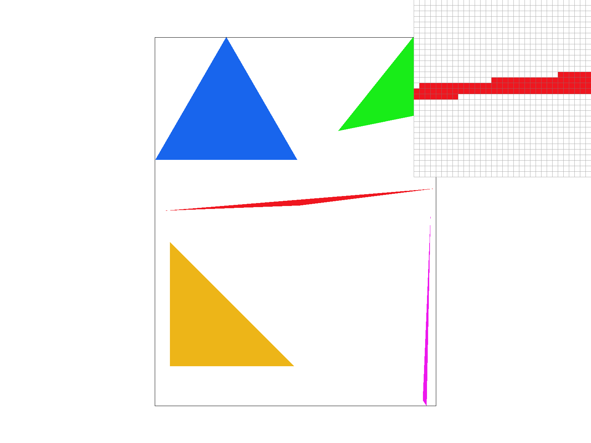
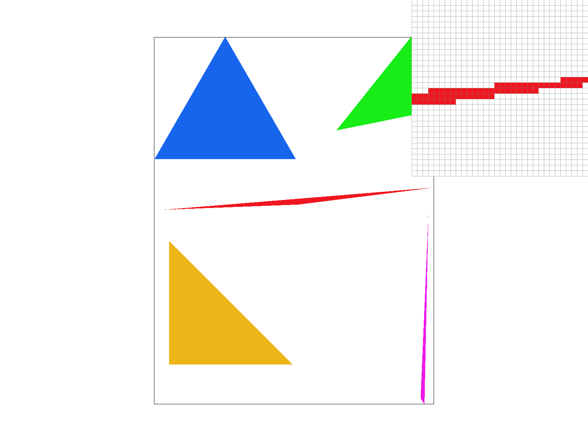
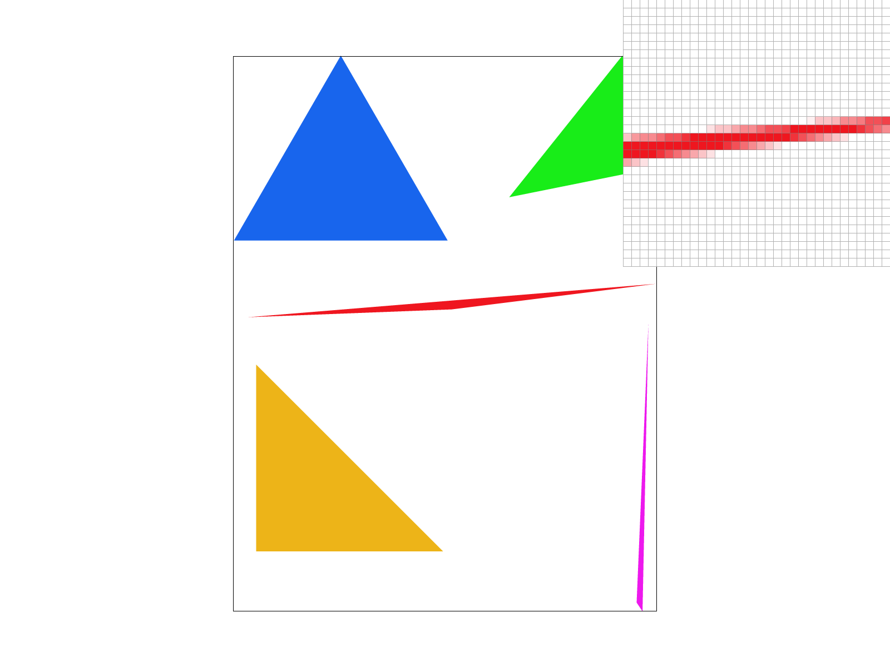
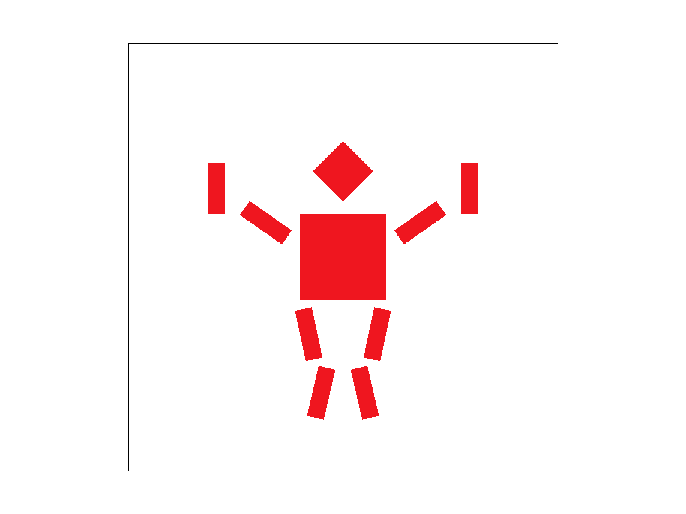
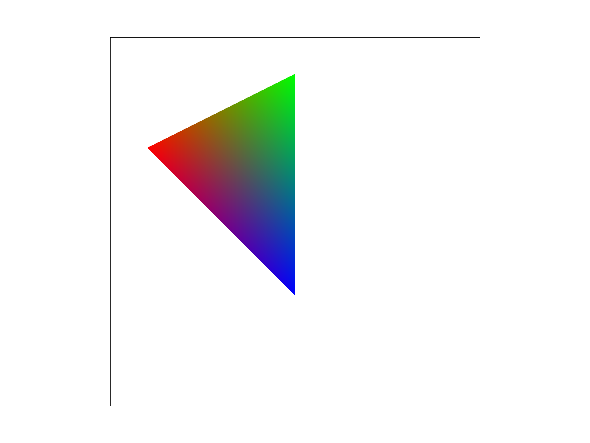
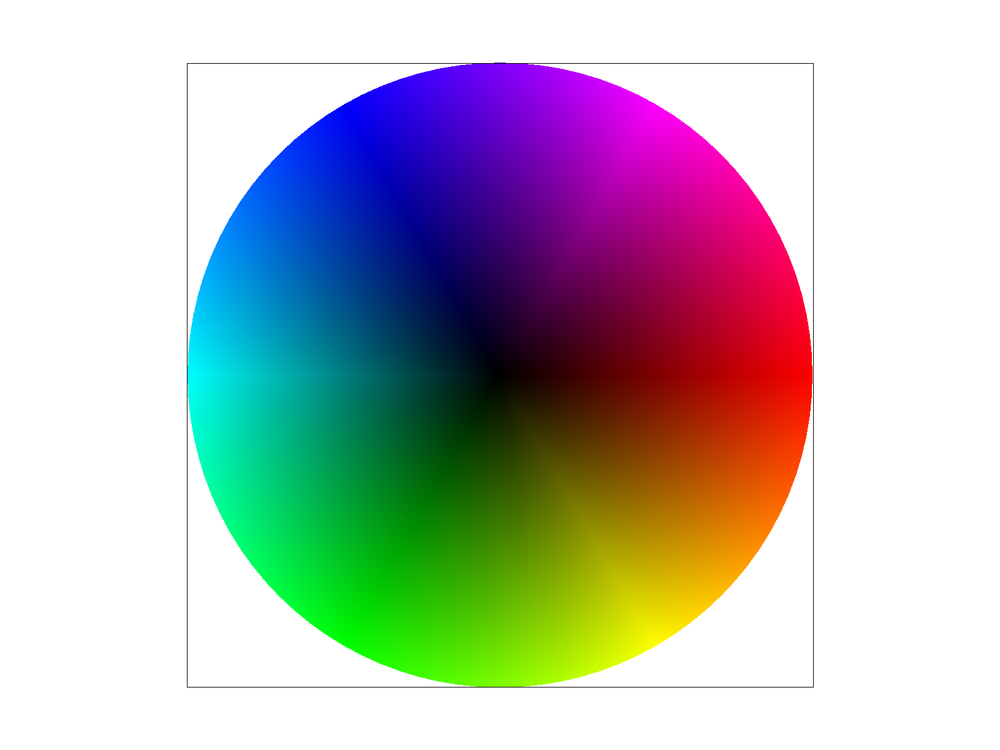

CS184/284A Fall 2026 Homework 1 Write-Up
Link to webpage: https://cal-cs184-student.github.io/hw1-iloveihouse-writeup
Link to GitHub repository: https://github.com/cal-cs184-student/hw1-iloveihouse
Overview
In this homework we built a simple rasterizer. Task 1 and Task2 implements a basic triangle rasterization and supersampling for antialiasing. Task3 asks for three matrix operations for transformation. Task4 asks for implementation for interpolation of barycentric coordinates. Task 5 and 6 askes us to implement texture mapping. From this homework, we learned how to implement a basic rasterization pipeline, and be aware of small edge cases that can end up into wrong rendering results.
Task 1: Drawing Single-Color Triangles
To rasterize triangles, first we take the min and max of the three vertices x and y coordinates to get the bounding box of the triangle. Then we loop over every pixel in that box , test the center by sampling the point location\((x + 0.5,\; y + 0.5)\). For the evaluation of the sample point, we use the three line equations: for each edge \((P_i, P_{i+1})\).
On which side of the point lies comparative to the edge depends on the sign of \(L_i\). If all three values are the same positive or negative, the point is inside the triangle. If the point is inside the triangle, we write the color into the sample buffer. We put a small epsilon for the points that sit exactly on an edge from being dropped.
The two requested images are shown below:


Why it is no worse than the bounding-box algorithm. The algorithm we used is the bounding-box algorithm.
Task 2: Antialiasing by Supersampling
Algorithm of supersampling and code implementations
While task 1 took only one sample per pixel, we use supersampling to take more samples per pixel. We use the sample_rate parameter to decide how much we want to supersample. For a sample rate of N, each pixel is split into a \(\sqrt{N} \times \sqrt{N}\) grid of sub-pixels. The sample_buffer vector stores one color for each sub-pixel, and the resolve_to_framebuffer function averages the colors of all sub-pixels in a pixel to produce the final color for that pixel. The final image is stored in the framebuffer vector, which is then written to a PNG file.
In rasterize_triangle we keep the same bounding box and the same three line tests from Task 1. There are two modifications in the pipeline: (1) For each pixel in the box we now loop over the \(\sqrt{N} \times \sqrt{N}\) sub-pixels for supersampling. (2) After all shapes are drawn, we put the resolve_to_framebuffer to turn the sample buffer into the final image. For each pixels, color is averaged over all grides and therefore get the blurred results.
Results. Below is basic/test4.svg at sample rates 1, 4, and 16.


From comparing side by side, we could inspect that the edges with high frequencies become blurry as the sample rate increases, overall removing jaggies that exist from lower sample rate. The higher it had, the more blury the edges look.
Task 3: Transforms
For task3, we wrote down three transformation functions : translate, scale, and rotate. With these three functions, we could successfully render a basic robot given. In addition, we also created a new pose of a robot in the gym doing biceps and a squat on the same time. We changed in the svg file to add rotate function in order for the robot to make a nice pose that looks like a weightlifter. The results is shown below:


Task 4: Barycentric coordinates
Barycentric coordinates are three weights, one per triangle vertex. We use barycentric formula using an area/edge function form (for alpha, beta, gamma = 1-alpha-beta) to interpolate the color by weighting the three vertex colors. In our implementation, we go over using the algorithm from task 1,2 to check if the pixel is inside the triangle, and then color it with barycentric coordinates if so. To show this, here is a single triangle filled in pixel by pixel using its barycentric weights as colors. (We used svg of triangle from subdiv/triangle1.svg) Each corners are assigned with color of red, green, blue and the colors inside are interpolated by barycentric coordinates.

svg/basic/test7.svg with default viewing parameters and sample_rate =1. Here, note that when the barycentric denominator were extremly small due to fp issues, the interpolation becomes unstable resulting into white spaces observable. We simply added a small eps term in the barycentric denominator to overcome it.
